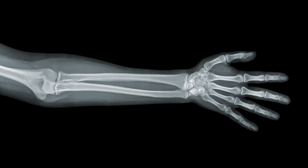
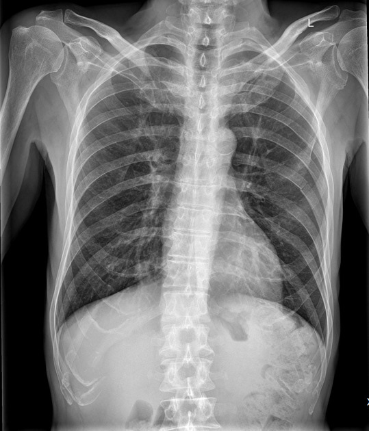

Memory as stored in the body

“She could read Sailor’s last actions by knowing the wounds on bone. He puts his arms up over his face to protect himself from the blow. He is shot with a rifle, the bullet going through his arm, then into the neck.
While he’s on the ground, they come up and kill him.” (find page in book - in the Sarath section)
Let us use this example from Anil’s Ghost to complicate our understanding of memory,
how can we extrapolate recollection and knowledge from the body. Trauma is stored in Sailor’s body even posthumously. This is evidence - is it considered more objective because it is not a “recollection”? How would this be complicated if Sailor had survived his injuries - would his story be as sought after by a human rights worker?

“The firelight set the face in movement. But what affected her—who felt she knew every physical
aspect about Sailor, who had been alongside him now in his posthumous life as they travelled
across the country, who had slept in a chair all night while he lay on the table in the
Bandarawela rest house, who knew every mark of trauma from his childhood—was that this head was
]not just how someone possibly looked, it was a specific person. It revealed a distinct
personality, as real as the head of Sarath. As if she was finally meeting a person who had been described
to her in letters, or someone she had once lifted up as a child who was now an adult.”
(anil’s ghost find page number - in Ananda)
This quote serves as an example of the ways in which physical memory moves us in similar ways to told memory. Anil feels a proximity to Sailor because she knows him so intimately through his body. She is able to let herself become emotionally invested and attached, through his trauma she is able to see him as a full and complex human. This does bring up complexities around consent- how does physical memory play out when intimacy formed is one sided, because the other side is dead?
This quote serves as an example of the ways in which physical memory moves us in similar ways to told memory. Anil feels a proximity to Sailor because she knows him so intimately through his body. She is able to let herself become emotionally invested and attached, through his trauma she is able to see him as a full and complex human. This does bring up complexities around consent- how does physical memory play out when intimacy formed is one sided, because the other side is dead?